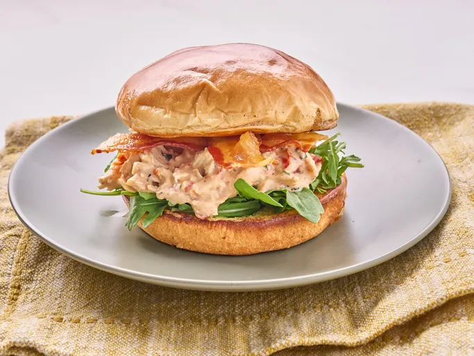

Slow Cooker Marry Me Chicken Sandwiches
Home

Description
Slow Cooker Marry Me Chicken Sandwiches are tender, juicy chicken breasts slow-cooked in a rich, savory sauce and served on toasted buns. The chicken is seasoned with a blend of spices and cooked low and slow until it falls apart, making it perfect for sandwiches.
Ingredients
- 1 pound boneless, skinless chicken breasts
- 1 cup chicken broth
- 1/2 cup ketchup
- 1/4 cup brown sugar
- 2 tablespoons Worcestershire sauce
- 1 tablespoon Dijon mustard
- 1 teaspoon garlic powder
- 1 teaspoon onion powder
- 1/2 teaspoon salt
- 1/4 teaspoon black pepper
- Buns for serving (optional)
Steps
- In a slow cooker, combine all ingredients except buns.
- Cook on low for 6-8 hours or high for 3-4 hours until chicken is tender and cooked through.
- Shred the chicken using two forks.
- Serve on buns if desired.